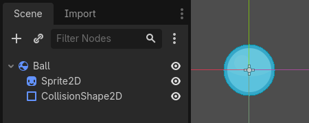

@export
Shows the variable in the Inspector so a designer can tune it without editing code.
Lesson 02 · 55 minutes · Logic layer
Turn your first room into a programmable system. You will store game data, make decisions, organize behavior into functions, and safely connect a script to other nodes.
State
A variable gives a name to data. Use clear names and add a type when the kind of data should stay consistent.
extends CharacterBody3D
@export var speed: float = 5.0
var health: int = 3
var player_name: String = "Nova"
var can_move: bool = true@exportShows the variable in the Inspector so a designer can tune it without editing code.
: float promises that speed will hold a decimal number and catches mistakes early.
Decisions
func take_damage(amount: int) -> void:
health -= amount
if health <= 0:
respawn()
else:
print("Health: ", health)
func respawn() -> void:
health = 3
global_position = Vector3(0, 2, 0)Functions package one meaningful behavior. Parameters bring data in; -> void says the function does not return a value.
References
Add a Label named StatusLabel under a CanvasLayer. Drag it from the Scene dock into the script editor while holding Ctrl/⌘ to generate a node reference.

$Sprite2D from Ball's own script — the same way $UI/StatusLabel walks down through a CanvasLayer to reach a Label.Screenshot: Godot Engine documentation, © Juan Linietsky, Ariel Manzur and the Godot community, CC BY 3.0.
@onready var status_label: Label = $UI/StatusLabel
func _ready() -> void:
status_label.text = "Ready, " + player_name
func _process(_delta: float) -> void:
status_label.text = "%s | HP %d | Speed %.1f" % [player_name, health, speed]
func _unhandled_input(event: InputEvent) -> void:
if event.is_action_pressed("test_damage"):
take_damage(1)
func show_inventory(items: Array[String]) -> void:
for item in items:
print(item)@onready waits until the node and its children are ready. A for loop repeats once for every item in a collection.
Blocks → Code
Read before running
take_damage(1) runs three times?Practice
StatusLabel and place it in the top-left corner.speed, health, and player_name; change them in the Inspector._process().test_damage to H and call take_damage(1) when it is pressed.Add an exported max_health variable. Make respawn restore that value instead of a hard-coded 3.
SignalRun_02_GDScript.Your restore point must show live HUD values and a working damage/respawn test.Definition of done
0/4 checked
Evidence: Demonstrate three H presses and explain why health returns to its maximum on the third.
You can now express game rules in GDScript.